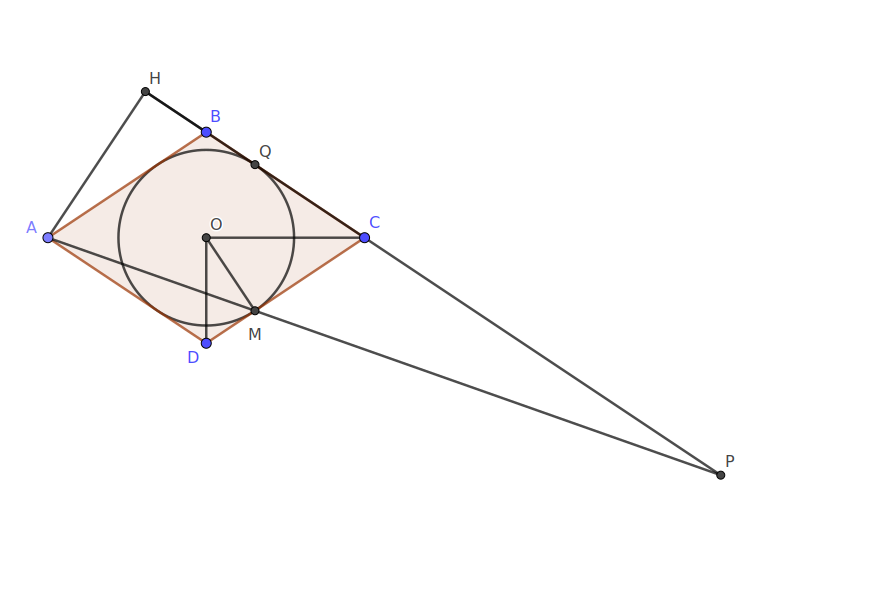

Решение задачи № 5
Подготовила Морозова Яна
Условие
Окружность, вписанная в ромб ABCD , касается сторон CD и BC в точках M и Q соответственно. Прямые AM и BC пересекаются в точке P.
а) Докажите, что \(BP*BQ = BC^2\).
б) Найдите угол APC, если \(DM=4\) и \(MC=9\).
Решение пункта а)
Обозначим \(DM=BQ=x\), \(CM=y\). Треугольники CMP и DMA подобны с коэффициентом подобия \( \frac{y}{x} \), поэтому
\[CP=\frac{y}{x}AD=\frac{y(x+y)}{x}\]
Тогда
\[BP=BC+CP=x+y+\frac{y(x+y)}{x}=(x+y)(1+\frac{y}{x})=\frac{(x+y)^2}{x}=\frac{BC^2}{BQ}\]
Следовательно, \(BP*BQ=BC^2\).

Решение пункта б)
Пусть O— центр окружности радиуса r, вписанной в ромб. Тогда OM— высота прямоугольного треугольника COD, проведённая из вершины прямого угла, поэтому
\[r=OM=\sqrt{DM*MC}=\sqrt{4*9}=6\]
Значит, высота ромба равна \(2r=12\).
Пусть H — основание перпендикуляра, опущенного из вершины A на прямую BC . Тогда AH — высота ромба, поэтому
\[AH=2r=12; BH=\sqrt{AB^2-AH^2}=\sqrt{13^2-12^2}=5\]
Из подобия треугольников CMP и DMA находим, что
\[CP=\frac{CM}{MD}AD=\frac{9}{4}13=\frac{117}{4}\]
Значит,
\[PH=CP+BC+BH=\frac{117}{4}+13+5=\frac{189}{4}\]
Из прямоугольного треугольника AHP находим, что
\[tgAPH=\frac{AH}{PH}=\frac{16}{63}\]
Следовательно, угол APC равен углу APH = arctg \(\frac{16}{63}\)
Ответ: \(arctg\frac{16}{63}\)